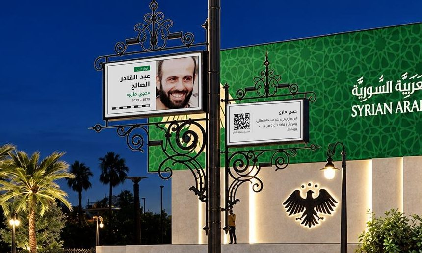
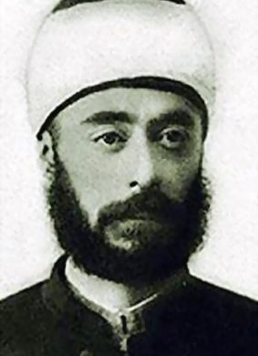

مقترح لأعمدة ساحة التحرير
العمود في الساحة، من الرندر النهائي
أعمدة تحكي حلب
نضع على أعمدة الساحة وجوه أشخاص صنعوا تاريخ حلب، من رموزها القدماء إلى ثوارها. كل عمود يحمل لوحتين: لوحة للصورة والاسم، ولوحة للتعريف ورمز QR.

تصميم اللوحتين
صورة واسم، ثم تعريف ورمز QR
اللوحة الكبيرة تحمل الصورة والاسم والمجال، والصغيرة تعرّف بالشخصية وتفتح قصتها كاملة عند مسح الرمز.
ثوار حلب
عبد القادر الصالح
«حجي مارع»
1979 – 2013
حجي مارع
ابن مارع في ريف حلب الشمالي، ومن أبرز قادة الثورة في حلب وريفها.
امسح وتعرّف أكثر

الفكر والنهضة
عبد الرحمن الكواكبي
1855 – 1902
عبد الرحمن الكواكبي
من رواد النهضة العربية، وصاحب «طبائع الاستبداد» و«أم القرى».
امسح وتعرّف أكثر
المجالات
مجالات من حياة حلب
شخصيات كل مجال من عصور مختلفة، من حلب القديمة إلى حلب اليوم.
ثوار حلب
النضال ضد الاستعمار
بُناة حلب وأمراؤها
الفكر والنهضة
الأدب والشعر
الطرب والموسيقى
مؤرخو حلب
رائدات حلب
العلم والطب
الحِرف والصناعة
التجارة والأسواق
الفن والرياضة
28/11من كل عام
الشخصيات تتجدد كل سنة
في ذكرى تحرير حلب من كل عام نستبدل بعض الشخصيات بأخرى جديدة. هكذا يتسع المكان لعدد أكبر من أبناء حلب، ويعود الناس كل سنة ليروا من انضم إلى الأعمدة.
آلية الاختيار
لجنة مشتركة تعتمد الأسماء
1
نرشّح الأسماء
يقدّم فريق المشروع قائمة مرشحين لكل مجال، مع نبذة عن كل شخصية.
2
اللجنة المشتركة تعتمد
تدرس اللجنة القائمة وتعدّلها وتعتمد الأسماء النهائية.
محافظة حلبفريق المشروعمؤرخ حلبيجهة ثقافية
3
التنفيذ
تُركَّب اللوحات على الأعمدة قبل افتتاح الساحة في 28/11.
معايير اختيار الشخصيات
- أثر واضح في حلب وأهلها
- لا علاقة لها بالنظام البائد
- لا خلاف عليها بين الحلبيين
- تنوّع في المجالات والعصور